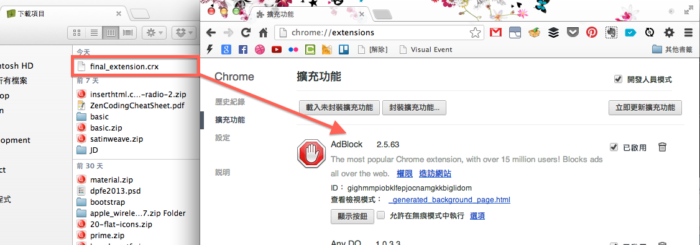
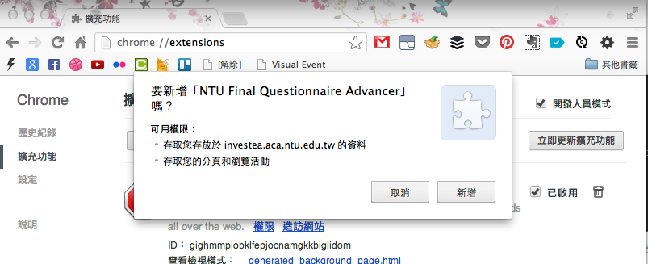
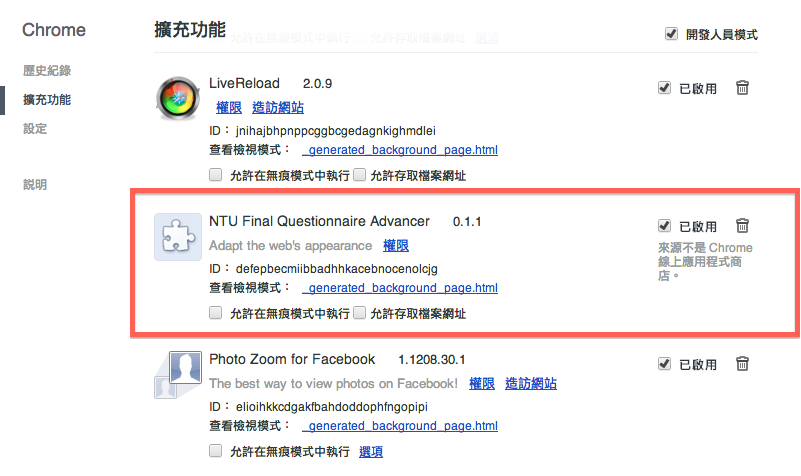
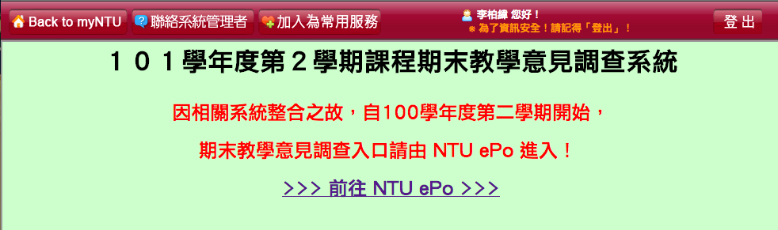
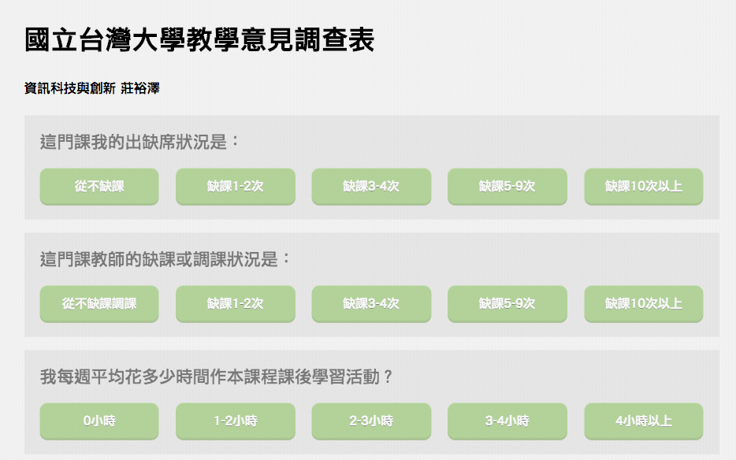

1. 下載套件
請點擊以下連結下載套件
此時視窗會出現以下警告，請按下確定。
無法從這個網站新增應用程式、擴充功能及使用者指令碼。 了解詳情
2. 打開擴充功能選單
從右上角打開選單列，選「工具」底下的「擴充功能」

3. 安裝擴充套件
從下載資料夾中拖曳剛剛下載的檔案『final_extension.crx』到 Chrome 的擴充功能頁。
按下新增
4. 安裝成功
安裝成功後可以在擴充功能列表找到剛剛裝上的『NTU Final Questionnaire Advancer』
5. 開始填答
回到 myntu 登入期末意見調查系統。
進入系統
6. 享受愉悅的新介面
隨意選一個科目，開始享受填答

操作提示： 可以使用上下鍵選取題目，左右鍵選取選項，空白或輸入鍵確認選取選項。